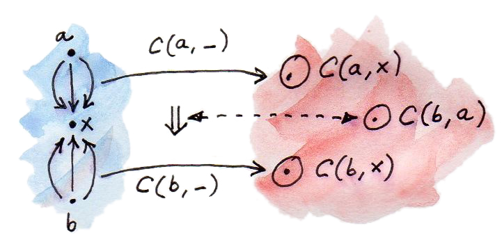
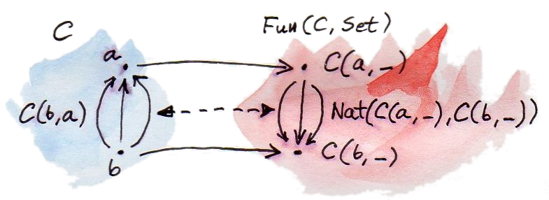

之前看到，在范畴 C 中固定对象 a 时，映射 C(a,-) 是从 C 到 Set 的（协变）函子：
（陪域是 Set，因为 Hom 集 C(a,x) 是一个集合。）我们称这个映射为 Hom 函子；此前也已经定义了它对态射的作用。
现在让映射中的 a 也变化。得到一个新映射，它给每个 a 分配 Hom 函子 C(a,-)：
这是从范畴 C 的对象到函子的映射，而函子是函子范畴中的对象（参见《自然变换》中关于函子范畴的部分）。用 [C,Set] 表示从 C 到 Set 的函子范畴。你可能还记得，Hom 函子是可表函子的原型。
每当两个范畴之间存在对象映射，自然会问：它是否也是函子？换句话说，能否把一个范畴中的态射提升成另一个范畴中的态射。C 中的态射只是 C(a,b) 的元素，但函子范畴 [C,Set] 中的态射是自然变换。因此我们要寻找从态射到自然变换的映射。
看看能否找到与态射 f:a→b 对应的自然变换。先看 a 与 b 映射成什么：它们映射为两个函子 C(a,-) 与 C(b,-)。我们需要这两个函子之间的自然变换。
技巧就在这里：使用 Yoneda 引理：
把一般的 F 替换为 Hom 函子 C(b,-)，得到：

这正是我们寻找的两个 Hom 函子之间的自然变换，但有一个小转折：自然变换对应的是“反方向”的态射——C(b,a) 的元素。不过没关系，它只表示我们考察的函子是逆变的。

实际上，得到的比预期更多。从 C 到 [C,Set] 的映射不仅是逆变函子，还是完全忠实函子（fully faithful functor）。完全性与忠实性描述函子怎样映射 Hom 集。
忠实函子（faithful functor）在 Hom 集上是单射：它把不同态射映射成不同态射。换句话说，它不会把它们合并。
完全函子（full functor）在 Hom 集上是满射：它把一个 Hom 集映满另一个 Hom 集，完全覆盖后者。
完全忠实函子 F 在 Hom 集上是双射（bijection）——两个集合全部元素之间的一一配对。对源范畴 C 中每对对象 a、b，C(a,b) 与 D(Fa,Fb) 之间都存在双射，其中 D 是 F 的目标范畴（这里是函子范畴 [C,Set]）。注意，这不表示 F 在对象上也是双射。D 中可能存在不属于 F 之像的对象；对于这些对象的 Hom 集，我们不能作任何断言。
嵌入
刚刚描述的（逆变）函子——把 C 中对象映射到 [C,Set] 中函子的函子：
定义了Yoneda 嵌入（Yoneda embedding）。它把范畴 C（严格说是 Cop，因为具有逆变性）嵌入函子范畴 [C,Set]。它不仅把 C 中对象映射为函子，还忠实地保留对象之间的全部连接。
这是非常有用的结果，因为数学家非常了解函子范畴，尤其是陪域为 Set 的函子。把任意范畴 C 嵌入函子范畴，就能获得许多关于 C 的洞见。
当然，Yoneda 嵌入也有对偶版本，有时称为 co-Yoneda 嵌入。注意，也可以从固定每个 Hom 集的目标对象（而非源对象）C(-,a) 开始，由此得到逆变 Hom 函子。从 C 到 Set 的逆变函子，就是熟悉的预层。Co-Yoneda 嵌入把范畴 C 嵌入预层范畴（category of presheaves）。它对态射的作用由下式给出：
同样，数学家非常了解预层范畴，因此能把任意范畴嵌入其中，是一个巨大的收获。
Haskell 应用
在 Haskell 中，Yoneda 嵌入可以表示为：一边是 Reader 函子之间的自然变换，另一边是反方向函数，二者同构：
forall x. (a -> x) -> (b -> x) ≅ b -> a（记住，Reader 函子等价于 ((->) a)。）
这个恒等式左边是多态函数：给定从 a 到 x 的函数与类型 b 的值，它能产生类型 x 的值（这里把 b→x 反柯里化理解，也就是去掉其外围括号）。要对所有 x 都做到这一点，函数必须知道怎样把 b 转换成 a；它必然暗中持有一个 b→a 函数。
给定这样的转换器 btoa，可把左边定义为 fromY：
fromY :: (a -> x) -> b -> x
fromY f b = f (btoa b)反过来，给定函数 fromY，用恒等函数调用它即可恢复转换器：
fromY id :: b -> a这就建立了 fromY 类型的函数与 btoa 之间的双射。
理解这个同构的另一种方式，是把它看成从 b 到 a 之函数的 CPS 编码。参数 a→x 是续延（处理器）；结果是从 b 到 x 的函数。用类型 b 的值调用它时，它会执行与被编码函数前复合的续延。
Yoneda 嵌入也解释了 Haskell 中数据结构的一些替代表示。特别是，它为 Control.Lens 库中的透镜提供了一种非常有用的表示。
预序示例
这个例子由 Robert Harper 建议。它把 Yoneda 嵌入应用于由预序定义的范畴。预序（preorder）是一个集合，其元素之间带有传统上写作 ≤（小于等于）的序关系。“预”字表示这里只要求关系具有传递性与自反性，而不一定反对称（所以可能存在环）。
带预序关系的集合会产生一个范畴。对象是集合的元素。若对象不可比较或 a≤b 不成立，就不存在从对象 a 到 b 的态射；若 a≤b，则存在一支从 a 指向 b 的态射。任意两个对象之间绝不会有多于一支态射。因此，这种范畴中的任何 Hom 集要么为空，要么只含一个元素。这样的范畴称为薄范畴（thin category）。
不难确信这个构造确实是范畴：箭头可复合，因为若 a≤b 且 b≤c，则 a≤c；复合也满足结合律。恒等箭头也存在，因为每个元素都（小于或）等于自身，这是底层关系的自反性。
现在可以把 co-Yoneda 嵌入应用于预序范畴。我们特别关心它对态射的作用：
当且仅当 a≤b 时，右边的 Hom 集非空——此时它是单元素集合。因此，若 a≤b，左边存在唯一自然变换；否则不存在自然变换。
预序中 Hom 函子之间的自然变换是什么？它应当是集合 C(-,a) 与 C(-,b) 之间的一族函数。在预序中，每个集合要么为空集，要么是单元素集合。看看有哪些函数可用。
存在从空集到自身的函数（空集上的恒等函数）、从空集到单元素集合的函数 absurd（它什么也不做，因为只需为根本不存在的空集元素定义），以及从单元素集合到自身的函数（单元素集上的恒等函数）。唯一禁止的组合，是从单元素集合映射到空集：这个函数作用于唯一元素时，该返回什么？
因此，自然变换绝不会把单元素 Hom 集连接到空 Hom 集。换句话说，若 x≤a（Hom 集 C(x,a) 为单元素），C(x,b) 就不能为空。C(x,b) 非空意味着 x≤b。所以，该自然变换存在的条件是：对每个 x，若 x≤a，则 x≤b：
另一方面，co-Yoneda 告诉我们，这个自然变换存在，等价于 C(a,b) 非空，也就是 a≤b。合在一起得到：
当然，也可以直接得到这个结果。直觉是：若 a≤b，所有位于 a 下方的元素也必定位于 b 下方。反过来，在右边用 a 替换 x，就推出 a≤b。但你必须承认，通过 Yoneda 嵌入得出这个结果更令人兴奋。
自然性
Yoneda 引理建立自然变换集合与 Set 中对象之间的同构。自然变换是函子范畴 [C,Set] 中的态射；任意两个函子之间的自然变换集合，就是该范畴中的 Hom 集。Yoneda 引理给出同构：
事实证明，这个同构在 F 与 a 上都自然。换句话说，它在 (F,a) 上自然，而这个二元组取自积范畴 [C,Set]×C。注意，现在把 F 当成函子范畴中的对象。
想一想这是什么意思。自然同构是两个函子之间可逆的自然变换。确实，同构右边是一个函子：它从 [C,Set]×C 到 Set，把二元组 (F,a) 映射成一个集合——函子 F 在对象 a 处求值的结果。这称为求值函子（evaluation functor）。
左边也是函子，它把 (F,a) 映射到自然变换集合 [C,Set](C(a,-),F)。
要说明它们确实是函子，还应定义它们对态射的作用。但二元组 (F,a) 与 (G,b) 之间的态射是什么？它是一对态射 (Φ,f)：第一个是函子之间的态射——自然变换，第二个是 C 中的普通态射。
求值函子把这一对 (Φ,f) 映射为集合 F a 与 G b 之间的函数。这个函数很容易由 Φ 在 a 处的分量（把 F a 映射到 G a）与经 G 提升后的态射 f 构成：
注意，由于 Φ 的自然性，它等于：
我不打算证明整个同构的自然性——建立函子之后，证明只是机械操作。它来自这样一个事实：我们的同构由函子与自然变换组成，根本没有出错的余地。
习题
- 用 Haskell 表达 co-Yoneda 嵌入。
点击展开参考答案
固定 Hom 的目标得到
Op a x=x→a。Co-Yoneda 嵌入可写为forall x. (x→a)→(x→b) ≅ a→b。给定atob:a→b，把h:x→a映射成atob . h；反向用这个多态变换作用于id，恢复a→b。 - 证明前面在
fromY与btoa之间建立的双射是同构，即两个映射互为逆。点击展开参考答案
由
btoa构造fromY f=f . btoa，再取fromY id=id . btoa=btoa。反向从多态fromY取btoa=fromY id，重建得到f . fromY id；由参数性对应的自然性，fromY f=f . fromY id，因此恢复原函数。 - 推导幺半群的 Yoneda 嵌入。幺半群的唯一对象对应什么函子？幺半群态射对应什么自然变换？
点击展开参考答案
把幺半群 M 看成单对象范畴。唯一对象映射到正则 Hom 函子；它在唯一对象处的值是底层集合 M，每个元素
g的函子作用是左复合h↦g∘h。由于源、目标对象相同，所有幺半群元素都嵌入为这个函子的自然自变换；元素f对应逐点右复合h↦h∘f。逆变性体现为复合顺序反转。 - 协变 Yoneda 嵌入应用于预序会得到什么？
点击展开参考答案
它把对象
a映射到预层C(-,a)，也就是a的下集：对每个x，当x≤a时取单元素集合，否则取空集。态射a≤b对应这些下集的包含；完全忠实性给出a≤b当且仅当对所有x，x≤a蕴含x≤b。 - Yoneda 嵌入可把任意函子范畴 [C,D] 嵌入函子范畴 [[C,D],Set]。说明它怎样作用于态射（这里的态射是自然变换）。
点击展开参考答案
把 [C,D] 本身当作一个范畴。对象函子
F映射到 Hom 函子[C,D](F,-)。自然变换η:F→G因逆变性映射为两个 Hom 函子之间的自然变换：其在任意H处把α:G→H映射成α∘η:F→H。这就是用η前复合。